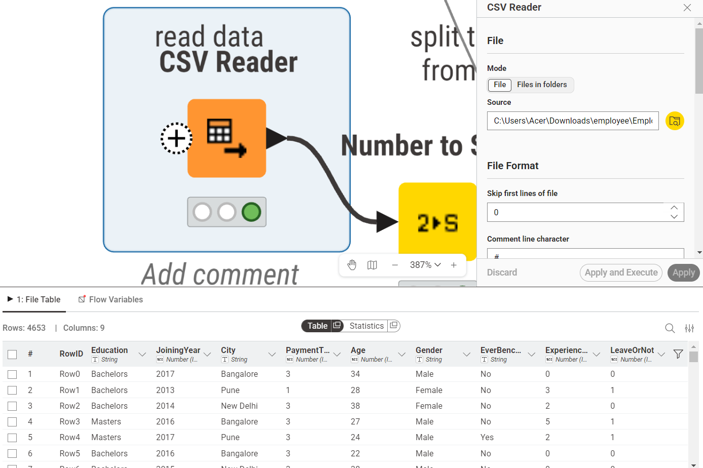
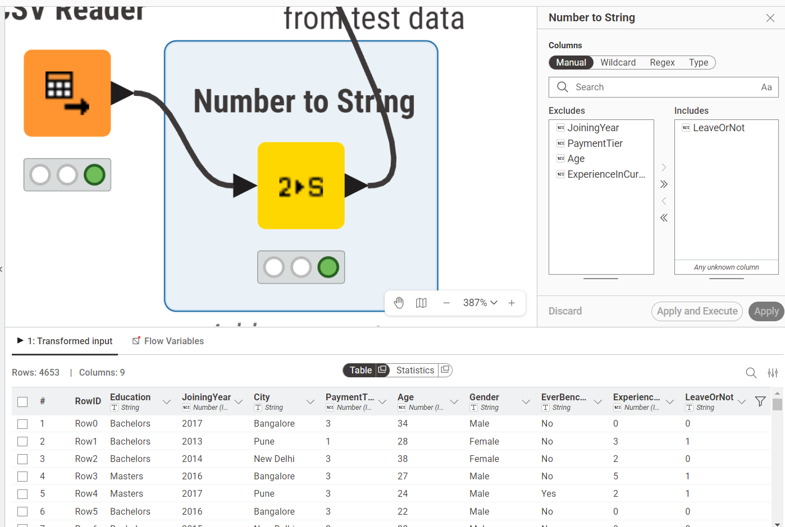
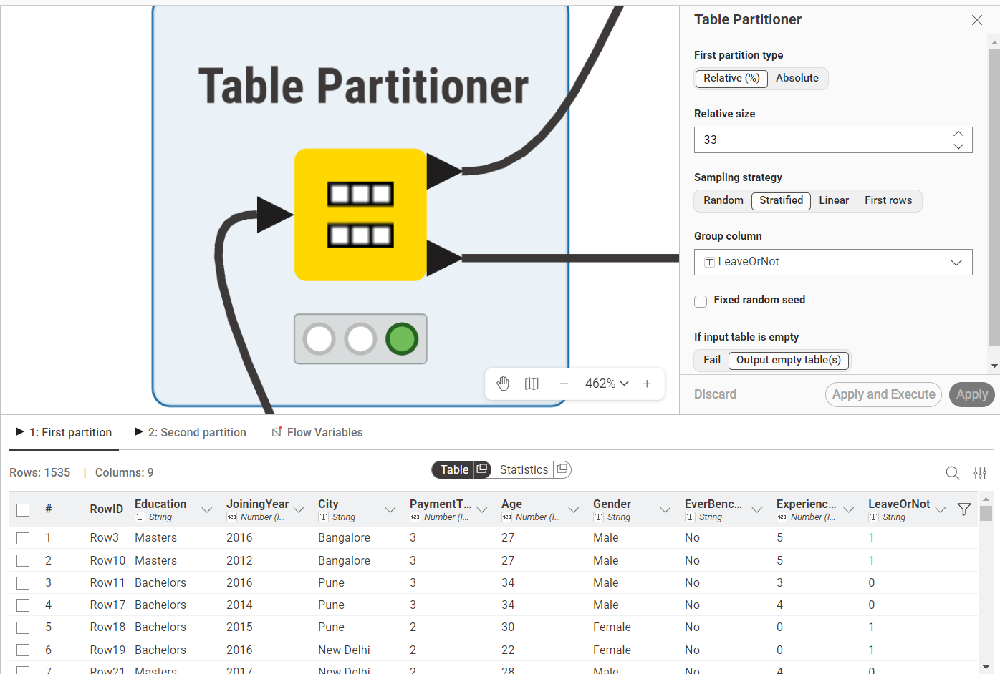
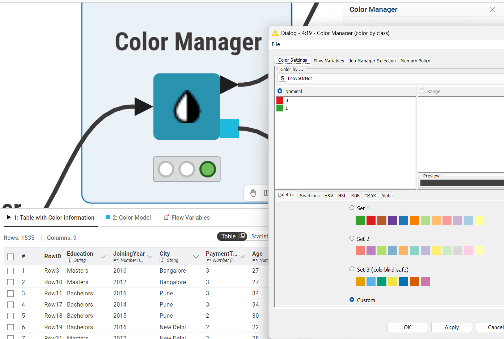
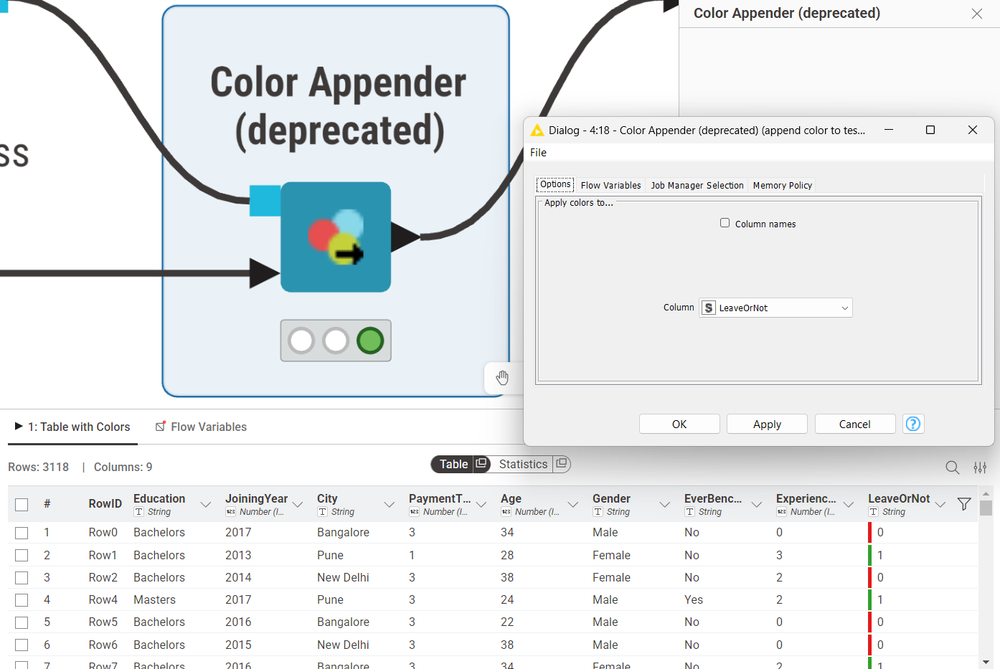
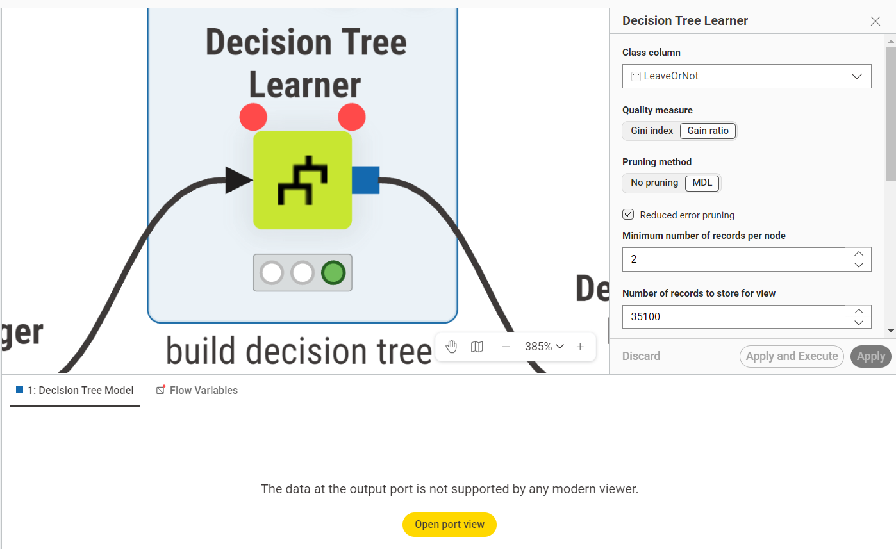
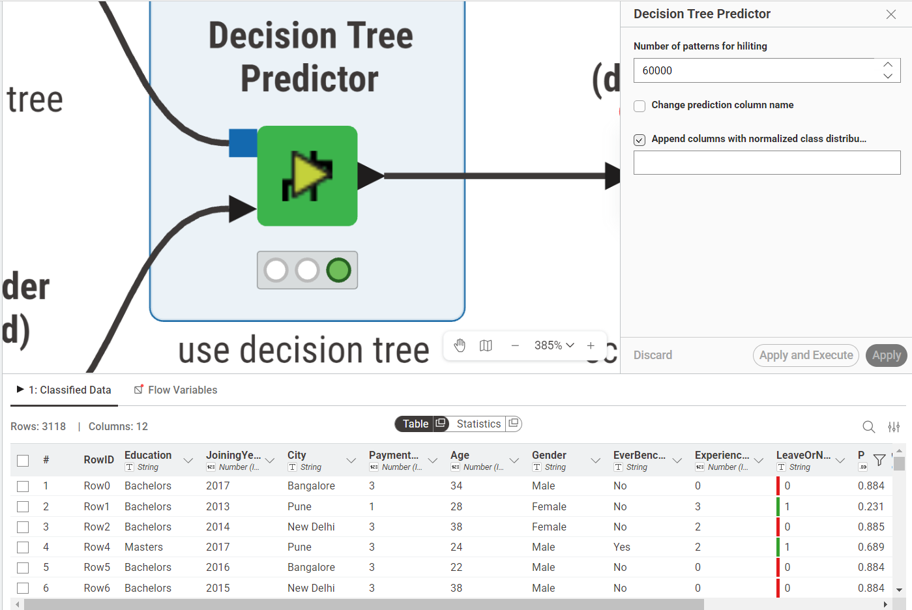
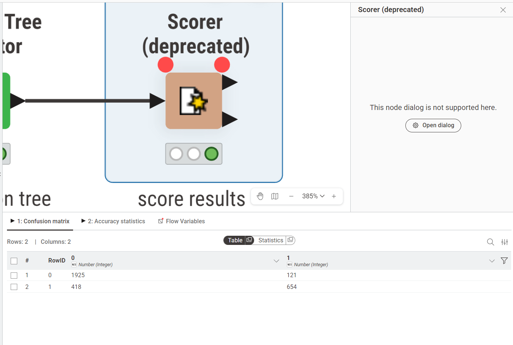
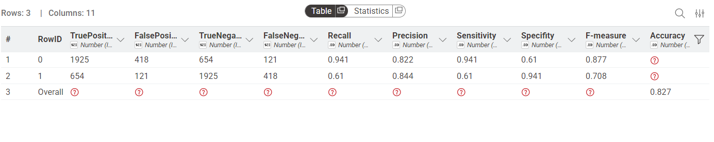

Analisa Data Menggunakan Decision Tree#
1. Pendahuluan#
Latar belakang analisis data ini adalah untuk menerapkan metode klasifikasi Decision Tree pada dataset karyawan nyata yang bersumber dari Kaggle (Employee Dataset). Dataset ini memuat informasi demografis dan historis karyawan beserta label apakah karyawan tersebut akhirnya resign (LeaveOrNot). Decision Tree dipilih karena menghasilkan model yang mudah diinterpretasikan, dapat menangani data kategorik maupun numerik, serta tidak memerlukan asumsi distribusi data tertentu.
Tujuan analisis:
Menjelaskan konsep dasar Decision Tree secara mendalam, termasuk cara kerja tree induction, stopping condition, serta ukuran pemilihan fitur menggunakan Entropy, Information Gain, dan Gain Ratio.
Menyediakan contoh implementasi menggunakan node Decision Tree Learner di KNIME Analytics Platform.
Membahas konfigurasi node, hasil evaluasi model, serta kelebihan dan kekurangan metode.
2. Konsep Dasar Decision Tree#
Decision Tree adalah metode pembelajaran mesin supervised yang membangun model berupa struktur tree hierarkis untuk melakukan klasifikasi atau regresi. Setiap internal node merepresentasikan sebuah pengujian terhadap suatu atribut (fitur), setiap branch merepresentasikan hasil pengujian tersebut, dan setiap leaf node merepresentasikan label kelas akhir yang menjadi output prediksi.
Secara konseptual, Decision Tree bekerja seperti serangkaian pertanyaan yes/no yang diajukan secara berurutan terhadap data baru hingga sampai pada suatu kesimpulan. Misalnya pada dataset Employee: “Apakah PaymentTier = 1?” => jika ya, lanjut ke pertanyaan berikutnya; jika tidak, lanjut ke cabang yang berbeda.
2.1 Cara Kerja: Proses Pembangunan Tree (Tree Induction)#
Pembangunan Decision Tree menggunakan algoritme rekursif yang dikenal sebagai recursive binary splitting atau secara umum disebut top-down greedy approach. Prosesnya berlangsung sebagai berikut:
Langkah 1 - Mulai dari root node. Seluruh training data diletakkan pada satu node awal (root). Algoritme kemudian mencari atribut terbaik untuk membagi data tersebut dengan menghitung ukuran kualitas splitting (dalam hal ini Gain Ratio) untuk setiap atribut yang tersedia.
Langkah 2 - Pilih atribut terbaik sebagai splitting criterion. Atribut dengan Gain Ratio tertinggi dipilih sebagai pemisah pada node tersebut. Data kemudian dibagi menjadi beberapa subset berdasarkan nilai atribut yang dipilih. Setiap subset menjadi child node baru.
Langkah 3 - Ulangi secara rekursif. Proses pada Langkah 1 dan 2 diulang pada setiap child node: hitung Gain Ratio semua atribut yang belum digunakan, pilih yang terbaik, bagi data lagi. Proses ini terus berlanjut ke bawah secara rekursif.
Langkah 4 - Berhenti saat stopping condition terpenuhi. Rekursi berhenti dan node dijadikan leaf node ketika salah satu kondisi berikut terpenuhi:
Semua sampel dalam node sudah termasuk kelas yang sama (entropy = 0, node sudah pure).
Jumlah sampel dalam node sudah di bawah threshold minimum (pada konfigurasi KNIME: minimum number of records per node = 2).
Tidak ada atribut tersisa yang bisa digunakan untuk splitting lebih lanjut.
Kedalaman tree sudah mencapai batas maksimum yang ditentukan.
Setelah tree tumbuh penuh, dilakukan pruning untuk memangkas branch yang terlalu spesifik terhadap training data dan berpotensi menyebabkan overfitting pada data baru.
2.2 Entropy#
Sebelum bisa menghitung seberapa baik suatu atribut memisahkan data, kita perlu mengukur seberapa “kotor” atau tidak teraturnya suatu kumpulan data. Ukuran inilah yang disebut Entropy.
Entropy mengukur tingkat ketidakmurnian (impurity) distribusi kelas dalam suatu himpunan data \(S\). Semakin besar nilai entropy, semakin campur aduk distribusi kelasnya. Secara matematis:
dengan \(p(c)\) adalah proporsi sampel yang termasuk kelas \(c\) dalam himpunan \(S\), dan \(C\) adalah himpunan semua kelas yang mungkin.
Untuk kasus klasifikasi biner seperti LeaveOrNot (kelas 0 dan kelas 1), rumusnya menjadi:
Interpretasi nilai entropy:
Entropy = 0 berarti node sudah pure, semua sampel termasuk kelas yang sama. Ini adalah kondisi ideal untuk sebuah leaf node.
Entropy = 1 (maksimum untuk kasus biner) berarti distribusi kelas 50:50, kondisi paling tidak informatif.
Semakin kecil entropy setelah splitting, semakin baik kualitas pemisahan tersebut.
2.3 Information Gain#
Setelah memiliki cara mengukur impurity, langkah berikutnya adalah mengukur seberapa besar suatu atribut berhasil mengurangi impurity tersebut. Ukuran ini disebut Information Gain.
Information Gain dari atribut \(A\) terhadap himpunan \(S\) dihitung sebagai pengurangan entropy sebelum dan sesudah splitting:
dengan \(S_v\) adalah subset dari \(S\) yang memiliki nilai \(v\) pada atribut \(A\), dan \(\frac{|S_v|}{|S|}\) adalah bobot proporsional subset tersebut terhadap keseluruhan data.
Semakin tinggi Information Gain, semakin banyak “informasi” yang diberikan atribut tersebut dalam memisahkan kelas, sehingga semakin baik atribut itu dipilih sebagai splitting criterion. Namun, Information Gain memiliki kelemahan mendasar: ia secara sistematis memihak atribut dengan jumlah nilai unik yang banyak. Atribut seperti ID karyawan atau tanggal bergabung akan selalu mendapatkan Information Gain tinggi karena membagi data menjadi banyak subset kecil yang masing-masing cenderung pure, padahal atribut semacam itu tidak memiliki nilai prediktif yang sebenarnya.
2.4 Gain Ratio#
Gain Ratio adalah solusi atas kelemahan Information Gain yang diperkenalkan oleh J. Ross Quinlan dalam algoritme C4.5. Idenya sederhana: normalisasi Information Gain dengan ukuran yang merefleksikan seberapa banyak dan seberapa merata suatu atribut membagi data. Ukuran normalisasi ini disebut SplitInfo.
SplitInfo pada dasarnya adalah entropy dari distribusi subset itu sendiri, bukan distribusi kelas. Atribut yang membagi data menjadi banyak subset kecil yang merata akan memiliki SplitInfo besar, sehingga Information Gain-nya dibagi dengan angka besar dan Gain Ratio-nya menjadi kecil. Sebaliknya, atribut yang membagi data secara bermakna namun tidak berlebihan akan memiliki SplitInfo yang proporsional, sehingga Gain Ratio-nya tinggi.
Pada setiap node, algoritme menghitung Gain Ratio untuk semua atribut yang tersedia, lalu memilih atribut dengan Gain Ratio tertinggi sebagai splitting criterion node tersebut. KNIME menggunakan Gain Ratio sebagai ukuran kualitas default pada node Decision Tree Learner.
2.5 Pruning#
Decision Tree yang tumbuh hingga semua leaf node pure akan sangat spesifik terhadap training data dan gagal melakukan generalisasi pada data baru, kondisi ini disebut overfitting. Pruning adalah teknik untuk mengatasi hal tersebut dengan memangkas branch-branch yang terlalu spesifik.
KNIME menyediakan metode MDL (Minimum Description Length) sebagai strategi pruning. MDL berlandaskan prinsip Occam’s Razor: dari dua model yang sama-sama menjelaskan data dengan baik, pilih yang paling sederhana. Secara teknis, MDL mengukur total “biaya deskripsi” dari model (kompleksitas tree) ditambah biaya deskripsi dari kesalahan yang dibuat model tersebut. Branch dipangkas apabila menghapusnya menghasilkan total biaya deskripsi yang lebih rendah, artinya kesederhanaan yang diperoleh lebih bernilai daripada sedikit akurasi yang hilang.
3. Dataset yang Digunakan#
Dataset yang digunakan adalah Employee Dataset dari Kaggle (link), yang berisi 4.653 baris data karyawan dengan 9 atribut. Target klasifikasi adalah kolom LeaveOrNot.
Kolom |
Tipe |
Keterangan |
|---|---|---|
Education |
Kategorik |
Tingkat pendidikan (Bachelors, Masters, PHD) |
JoiningYear |
Numerik |
Tahun karyawan bergabung |
City |
Kategorik |
Kota domisili (Bangalore, Pune, New Delhi) |
PaymentTier |
Numerik (1-3) |
Level gaji (1 = rendah, 2 = sedang, 3 = tinggi) |
Age |
Numerik |
Usia karyawan (tahun) |
Gender |
Kategorik |
Jenis kelamin (Male / Female) |
EverBenched |
Kategorik |
Apakah pernah idle/bench (Yes / No) |
ExperienceInCurrentDomain |
Numerik |
Pengalaman di domain saat ini (tahun) |
LeaveOrNot |
Biner (0/1) |
Target: 1 = resign, 0 = tetap |
4. Implementasi di KNIME#
Workflow KNIME berikut menunjukkan alur analisis data dari pembacaan file CSV hingga evaluasi model Decision Tree menggunakan dataset Employee secara penuh (4.653 baris).
4.1 Table Reader (CSV Reader)#
Node Table Reader digunakan untuk membaca file Employee.csv dari direktori lokal. Dataset dimuat dengan seluruh 9 kolom dan 4.653 baris tanpa konfigurasi tambahan karena format file sudah bersih.

4.2 Number to String#
Node Number to String digunakan khusus untuk mengonversi kolom LeaveOrNot dari tipe numerik (integer 0/1) menjadi tipe string. Konversi ini diperlukan agar kolom target dapat dikenali sebagai kelas kategorik oleh node Decision Tree Learner dan Scorer yang membutuhkan tipe data nominal, bukan numerik.
Konfigurasi: hanya kolom LeaveOrNot yang dikonversi, kolom lain dibiarkan dengan tipe aslinya.

4.3 Table Partitioner#
Node Table Partitioner membagi dataset menjadi dua partisi: training set dan test set. Konfigurasi yang digunakan:
Ukuran partisi pertama (training set): 67% dari total data (test set 33%)
Strategi sampling: Stratified Sampling dengan group column
LeaveOrNot, untuk memastikan distribusi kelas pada training set dan test set proporsionalPenanganan tabel kosong:
If input table is empty => output empty table(s)
Stratified Sampling memastikan bahwa proporsi kelas 0 (tetap) dan kelas 1 (resign) pada training set mencerminkan distribusi kelas pada keseluruhan dataset, sehingga model tidak bias terhadap kelas mayoritas.

4.4 Color Manager#
Node Color Manager memberikan warna pada nilai-nilai kelas target untuk memudahkan visualisasi pada node-node berikutnya, termasuk tampilan Decision Tree. Konfigurasi warna yang digunakan:
LeaveOrNot = 0(Tetap Bekerja): warna merahLeaveOrNot = 1(Resign): warna hijau
Pemberian warna ini bersifat kosmetik dan tidak memengaruhi proses training model, tetapi sangat membantu dalam menginterpretasikan visualisasi Decision Tree secara intuitif.

4.5 Color Appender (deprecated)#
Node Color Appender (deprecated) meneruskan informasi warna dari Color Manager ke test set sehingga warna kelas turut ditampilkan pada output Decision Tree Predictor. Node ini diaplikasikan pada kolom LeaveOrNot di test set (output kedua Table Partitioner).

4.6 Decision Tree Learner#
Node Decision Tree Learner merupakan inti dari workflow ini. Node ini membangun model Decision Tree dari training set dengan konfigurasi sebagai berikut:
Parameter |
Nilai |
Keterangan |
|---|---|---|
Class column |
LeaveOrNot |
Kolom target yang diprediksi |
Quality measure |
Gain Ratio |
Ukuran kualitas pemisahan atribut |
Pruning method |
MDL |
Minimum Description Length untuk pruning tree |
Minimum number of records per node |
2 |
Jumlah minimum rekaman agar node tidak dipruning |
Number of records |
35100 |
Jumlah maksimum rekaman yang diproses |
Number of threads |
2 |
Jumlah thread paralel untuk training |
Skip nominal columns without domain information |
Aktif |
Lewati kolom nominal tanpa informasi domain |
No true child strategy |
Return null prediction |
Strategi ketika tidak ada branch yang cocok |
Missing value strategy |
Last prediction |
Gunakan prediksi terakhir yang valid untuk nilai kosong |
Parameter Quality measure diatur ke Gain Ratio sehingga pemilihan atribut pada setiap node menggunakan rumus Gain Ratio yang sudah dijelaskan pada bagian 2.4. Parameter Pruning method MDL membuang branch yang tidak signifikan untuk mengurangi overfitting. Minimum number of records per node sebesar 2 memastikan setiap leaf node minimal memiliki 2 sampel.

4.7 Decision Tree Predictor#
Node Decision Tree Predictor menggunakan model yang sudah dibangun oleh Decision Tree Learner untuk memprediksi kelas pada test set. Konfigurasi yang digunakan:
Number of patterns for hiliting:
60000(jumlah pola maksimum yang dapat di-highlight pada tampilan tree)
Node ini menghasilkan kolom tambahan berisi prediksi kelas (Prediction (LeaveOrNot)) yang akan dibandingkan dengan nilai aktual pada tahap evaluasi.

4.8 Scorer (deprecated)#
Node Scorer (deprecated) membandingkan kolom aktual dan kolom prediksi untuk menghasilkan confusion matrix dan metrik akurasi. Konfigurasi yang digunakan:
First column (nilai aktual):
LeaveOrNotSecond column (nilai prediksi):
Prediction (LeaveOrNot)Sorting strategy:
Insertion Order(urutan kelas mengikuti urutan kemunculan pertama di data)Missing value handling:
Ignore(baris dengan nilai kosong diabaikan)
Confusion matrix yang dihasilkan menunjukkan jumlah prediksi benar (True Positive dan True Negative) serta prediksi salah (False Positive dan False Negative) untuk masing-masing kelas.

5. Ringkasan Alur Workflow#
Urutan |
Node |
Fungsi Utama |
|---|---|---|
1 |
Table Reader (CSV Reader) |
Membaca file Employee.csv |
2 |
Number to String |
Mengonversi LeaveOrNot ke tipe string/nominal |
3 |
Table Partitioner |
Membagi data 67% training / 33% test dengan stratified sampling |
4 |
Color Manager |
Menetapkan warna kelas (0 = merah, 1 = hijau) |
5 |
Color Appender (deprecated) |
Meneruskan warna ke test set |
6 |
Decision Tree Learner |
Membangun Decision Tree dengan Gain Ratio dan MDL pruning |
7 |
Decision Tree Predictor |
Memprediksi kelas pada test set |
8 |
Scorer (deprecated) |
Mengevaluasi akurasi dengan confusion matrix |

6. Kelebihan dan Kekurangan Decision Tree#
Kelebihan:
Mudah diinterpretasikan karena struktur tree dapat divisualisasikan dan dipahami secara intuitif tanpa keahlian statistik mendalam.
Dapat menangani fitur kategorik maupun numerik tanpa memerlukan normalisasi atau transformasi data terlebih dahulu.
Tidak memerlukan asumsi distribusi data, berbeda dengan metode seperti Naive Bayes yang mengasumsikan distribusi Gaussian untuk fitur numerik.
Feature selection terjadi secara otomatis selama pembangunan tree berdasarkan Gain Ratio, sehingga fitur yang tidak relevan cenderung tidak digunakan.
Kekurangan:
Rentan terhadap overfitting jika tree dibiarkan tumbuh penuh tanpa pruning, terutama pada dataset dengan banyak fitur.
Tidak stabil: perubahan kecil pada training set dapat menghasilkan struktur tree yang sangat berbeda.
Kurang optimal untuk dataset dengan hubungan fitur yang bersifat linear atau kontinu, dibandingkan metode seperti regresi logistik.
Gain Ratio dapat mengalami kesulitan ketika semua atribut memiliki nilai informasi yang sangat rendah atau seragam.